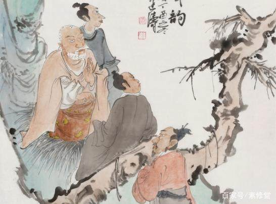
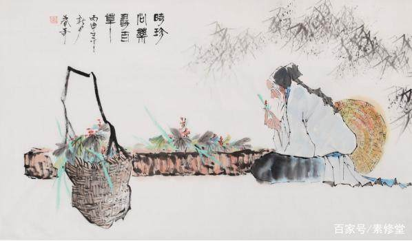
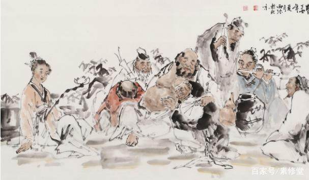

百善孝为先！-----关于孝道文化----
慈孝之心，人皆有之。
所谓孝道文化，就是关于关爱父母长辈、尊老敬老的一种文化传统。 孝道是中国古代社会的基本道德规范。一般指社会要求子女对父母应尽的义务，包括尊敬、关爱、赡养老人，为父母长辈养老送终等等。

孝与感恩是中华民族传统美德的基本元素。我国孝道文化包括敬养父母、生育后代、推恩及人、忠孝两全、缅怀先祖等，是一个由个体到整体，修身、齐家、治国、平天下的延展攀高的多元文化体系。
人间有三大真情：亲情、友情、爱情。如今，亲情缺认、友情缺位、爱情缺真的现象屡见不鲜。特别是在亲情方面出现的“六亲不认”的不孝与不感恩现象导致的问题已构成社会问题，影响了人际和谐、家庭和谐、社会和谐建设的进程与质量。孝与感恩是中华民族的最基本的传统美德，是中国人传统美德形成的基础，也是政治道德、社会公德、职业道德、家庭美德，个人品德建设的基本元素，也是当今政治文明、经济文明、精神文明建设不可忽视的精神支柱和精神力量。所以，给予我国孝道文化以科学和现代的诠释，对当下公民教育大有裨益。
关于孝道的名言：
1、人之行，莫大于孝。
出自《孝经》。人类的行为，没有比孝道更为重大的了。孝，是为人之本；敬，乃做人之根。
2、父慈而教，子孝而箴。
出自司马光的《家范》。父亲慈祥而能训教，儿子孝顺而能自我规劝。
3、千经万典，孝义为先。
出自《增广贤文》。不管有什么样的经典，忠孝仁义都是首要的
4、当家才知柴米贵，养儿方报父母恩。
当家的人才知柴米可贵，抚养孩子的人才会报答父母对自己的恩情。说明只有当了父母，才能体会当父母的艰辛。
5、父母全而生之，子全而归之，可谓孝矣。
出自《礼记·祭义篇》。孔子认为，父母完整地生下你的身体，你必须在死去的时候把完整的身体归返给父母，这才叫做孝。
关于孝道的故事：
亲尝汤药：
汉文帝刘恒，汉高祖第三子，为薄太后所生。高后八年（前180）即帝位。他以仁孝之名，闻于天下，侍奉母亲从不懈怠。母亲卧病三年，他常常目不交睫，衣不解带；母亲所服的汤药，他亲口尝过后才放心让母亲服用。他在位24年，重德治，兴礼仪，注意发展农业，使西汉社会稳定，人丁兴旺，经济得到恢复和发展，他与汉景帝的统治时期被誉为“文景之治”。
啮指痛心：
曾参，字子舆，春秋时期鲁国人，孔子的得意弟子，世称“曾子”，以孝著称。少年时家贫，常入山打柴。一天，家里来了客人，母亲不知所措，就用牙咬自己的手指。曾参忽然觉得心疼，知道母亲在呼唤自己，便背着柴迅速返回家中，跪问缘故。母亲说：“有客人忽然到来，我咬手指盼你回来。”曾参于是接见客人，以礼相待。曾参学识渊博，曾提出“吾日三省吾身”（《论语·学而》）的修养方法，相传他著述有《大学》、《孝经》等儒家经典，后世儒家尊他为“宗圣”。
百里负米：
仲由，字子路、季路，春秋时期鲁国人，孔子的得意弟子，性格直率勇敢，十分孝顺。早年家中贫穷，自己常常采野菜做饭食，却从百里之外负米回家侍奉双亲。父母死后，他做了大官，奉命到楚国去，随从的车马有百乘之众，所积的粮食有万钟之多。坐在垒叠的锦褥上，吃着丰盛的筵席，他常常怀念双亲，慨叹说：“即使我想吃野菜，为父母亲去负米，哪里能够再得呢？”孔子赞扬说：“你侍奉父母，可以说是生时尽力，死后思念哪！”

